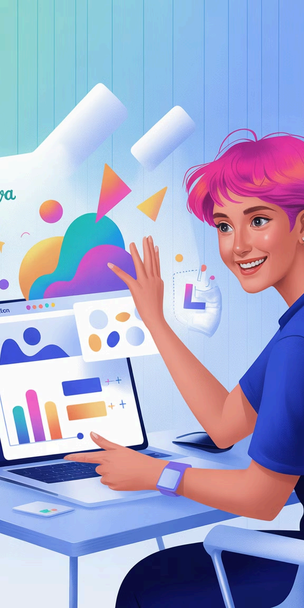

Elementlar qo'shish
Shakllar
"Elements" bo'limidagi "Shapes" kategoriyasidan doira, to'rtburchak, strelkalar va boshqa geometrik shakllarni qo'shishingiz mumkin. Ularning rangini, o'lchamini va shaffofligini oson o'zgartirish mumkin.
Diagrammalar
"Charts" bo'limidan taqdimotingizga mos keladigan diagramma turini tanlang: ustunli, doiraviy, chiziqli va boshqalar. Diagrammalarni o'z ma'lumotlaringizga qarab moslashtirishingiz mumkin.
Piktogrammalar
"Icons" bo'limidan mavzuga mos piktogrammalarni qidirib va qo'shing. Piktogrammalar murakkab g'oyalarni sodda va tushunarli ko'rinishda ifodalashga yordam beradi.
Ramkalar
"Frames" elementlari yordamida rasmlaringizni turli shakllarda joylashtirishingiz mumkin. Doira, yulduz, beshburchak va boshqa ko'rinishlar dizaynga jon bag'ishlaydi.